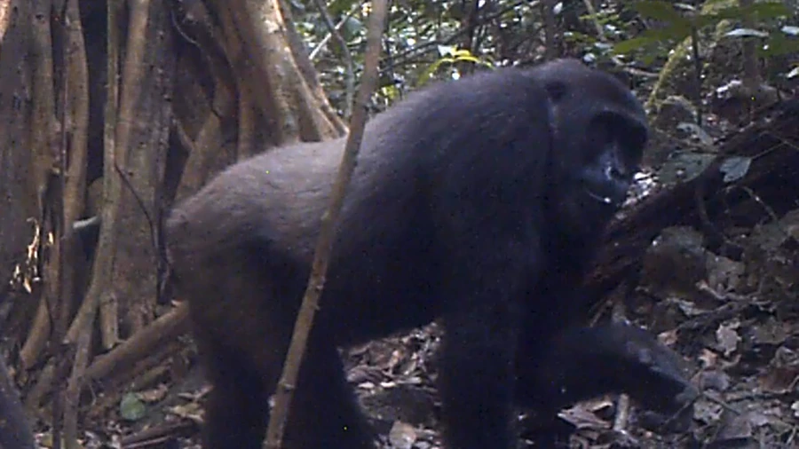

哺乳动物 · 动物界
大猩猩 Gorilla gorilla

现存体型最大的灵长类，以指关节着地行走，素食为主，过稳定的家族群生活，分布于非洲赤道雨林。
- 分类
- 门脊索动物门纲哺乳纲目灵长目科人科属大猩猩属
- 栖息环境
- 非洲赤道低地雨林与山地森林，偏好植被茂密的林下环境
- 地理分布
- 非洲中西部的低地雨林，从喀麦隆、加蓬到刚果河流域
- 保护级别
- IUCN 极危（CR）
物种志
大猩猩体长 1.0–1.5 米，直立身高 1.5–1.8 米，雄性体重 135–180 kg，圈养个体可超过 200 kg，雌性约 70–90 kg。它全身覆黑褐色粗毛，成年雄性背部毛发转为银灰色，被称为“银背”；头骨顶部有突出的矢状嵴，面部宽阔，前肢比后肢长。
大猩猩栖息于非洲赤道地区的低地雨林与山地森林，以树叶、嫩枝、树皮和果实为食，偶尔吃昆虫，每天进食量可达 20 kg 以上。它们以指关节着地四足行走，过一雄多雌的家族群生活，由一只银背雄性带领 3–10 只雌性与幼仔，负责决定行动路线和保卫群体。每天晚上，每只个体都会用树枝和树叶在树下搭一个新巢。大猩猩性情通常温和，但面对威胁时会拍胸、吼叫示威。偷猎、埃博拉病毒和森林砍伐使西部大猩猩被列为极危。
形态与习性
- 食性树叶、嫩枝、树皮与果实为主，每天约 20 kg 以上
- 体长1.0–1.5 m，直立身高 1.5–1.8 m
- 体重雄性 135–180 kg，雌性 70–90 kg
- 寿命野外约 35–40 年，圈养可超过 50 年
- 繁殖妊娠期约 8.5 个月，每 4–6 年产 1 仔
- 社会结构一雄多雌家族群，由银背雄性带领 3–10 只成员
- 行走方式以指关节着地四足行走
趣味知识
- 成年雄性大猩猩背部毛发变成银灰色，因此被称为“银背”。
- 大猩猩虽然体型巨大，却以树叶、嫩枝和果实为主食。
- 每晚每只大猩猩都会用枝叶在树下搭一个新巢睡觉。
- 大猩猩以指关节着地行走，前肢比后肢更长更有力。